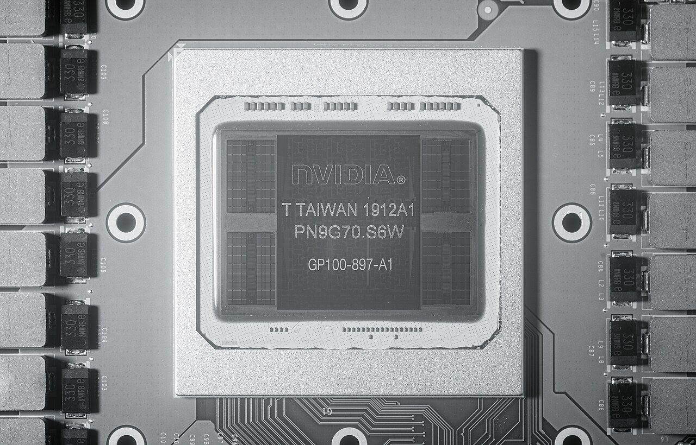
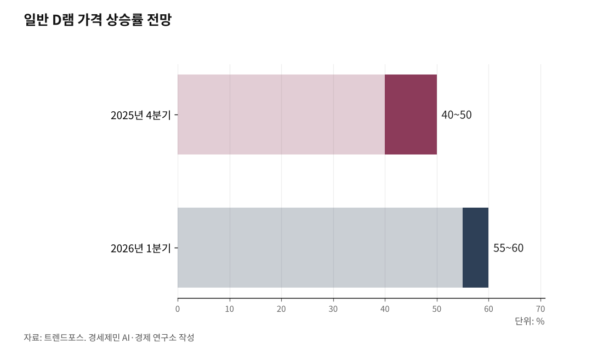

젠슨 황이 두고 간 4가지, 한국 반도체에 무엇을 남기나
베라 루빈·RTX 스파크가 부른 메모리 대량 주문…소부장·피지컬 AI·증시까지, 빛과 그늘
AI경세제민=김갑봉 기자 | 인하대 해양AI융합센터 김갑봉 연구교수 | 젠슨 황 엔비디아 최고경영자(CEO)가 6월 5일 다시 한국을 찾았다. 서울 홍대의 한 삼겹살집에서 최태원 SK그룹 회장, 구광모 LG그룹 회장, 이해진 네이버 의장과 이른바 '형님 회동'을 가졌다. 지난해 10월 이후 약 7개월 만이다.

그는 "한국에 큰 선물로 4개 새로운 사업을 가져왔다"고 말했다. 4가지 신제품 이야기다. 이 선물이 한국 반도체와 그 뒤를 받치는 산업에 무엇을 남길지 짚어본다.
4가지 선물, 무엇인가
황 CEO가 꼽은 네 가지는 베라 루빈, 베라 중앙처리장치(CPU), RTX 스파크, 젯슨 토르다.
베라 루빈(Vera Rubin)은 AI를 학습시키고 작동시키는 거대한 슈퍼컴퓨터 묶음이다. 올해 1월 미국 라스베이거스 CES에서 처음 공개됐다. 여러 칩을 하나로 묶은 구조로, 6세대 고대역폭메모리(HBM4)를 업계 처음으로 달았다.
RTX 스파크(RTX Spark)는 노트북에서 돌아가는 첫 개인용 AI 컴퓨터 칩이다. 황 CEO는 지난달 대만 행사에서 "40년 만에 PC를 다시 발명한다"고 했다. 매개변수 1200억개 규모 거대언어모델(LLM)을 노트북에서 직접 돌린다. 이 칩 역시 한국이 주력으로 만드는 저전력 D램을 많이 쓴다.
젯슨 토르(Jetson Thor)는 사람을 닮은 로봇 두뇌 노릇을 하는 칩이다. 현실에서 몸을 움직이는 AI, 곧 피지컬 AI를 위한 장치다. 미국 보스턴 다이내믹스가 만든 로봇 아틀라스 등이 이 칩을 쓴다.
네 제품에는 공통점이 있다. 모두 한국이 만드는 메모리 반도체를 대량으로 먹는다는 점이다.

HBM4가 핵심 고리다
황 CEO는 회동 자리에서 직접 밝혔다. 베라 루빈은 HBM을 많이 쓰고, CPU 베라는 저전력 메모리(LPDDR5)를 많이 쓴다고 말했다.
HBM은 메모리 칩을 위로 여러 장 쌓아 자료를 빠르게 주고받게 만든 제품이다. AI 계산에 없어서는 안 된다. 그 가장 앞선 6세대가 HBM4다.
이 HBM4를 만드는 곳이 삼성전자와 SK하이닉스다. 두 회사는 양산 시점을 2026년 2월로 앞당겼다. 엔비디아 루빈 출시 일정에 맞춘 결정이다.
투자은행 UBS는 루빈에 들어갈 HBM4 시장에서 SK하이닉스 점유율을 약 70%로 추산했다. 황 CEO 발언은 곧 한국 메모리 대량 주문 예고인 셈이다.
소부장에 부는 장비 사이클
수혜는 메모리 회사에 그치지 않는다. 그 뒤에는 소부장이 있다. 소재·부품·장비를 줄인 말이다.
HBM4는 칩을 12단, 16단으로 더 높이 쌓는다. 이렇게 칩을 촘촘히 쌓아 붙이는 공정을 어드밴스드 패키징(첨단 후공정)이라 부른다. 단수가 높아질수록 더 정교한 장비가 든다.
삼성과 SK하이닉스가 설비 투자를 2026년 초에 몰면서, 국내 장비 업계에 주문이 쏟아지고 있다. 2025년 한 해 수주 가뭄을 겪은 소부장에는 단비다. 업계에서는 '장비 슈퍼사이클(대호황 주기)'이라는 말이 나온다.
피지컬 AI 소부장이 열린다
젯슨 토르가 가리키는 방향은 또 다른 시장이다. 사람을 닮은 휴머노이드 로봇이다.
로봇이 움직이려면 부품이 필요하다. 관절을 움직이는 구동장치인 액추에이터, 주변을 살피는 센서, 힘을 대는 배터리다. 모두 한국이 강한 분야다.
현대차그룹은 2028년부터 미국 공장에 로봇 아틀라스를 단계적으로 넣고, 연 3만대 양산 체제를 갖추겠다고 밝혔다(2026년 5월). 부품을 대는 현대모비스는 핵심 부품인 액추에이터를 자체 생산으로 돌리고 있다. 메모리에서 시작된 수요가 로봇 부품으로 번지는 그림이다.
그늘과 증시 변수
빛만 있는 것은 아니다. 그늘도 뚜렷하다.
메모리 회사들이 돈이 되는 HBM에 생산 설비를 몰자, 값싼 일반 D램이 모자라졌다. 그 결과 메모리값이 치솟았다. 시장조사업체 트렌드포스는 일반 D램 가격이 2025년 4분기 40~50%, 2026년 1분기 55~60% 오를 것으로 봤다. 다만 5월 들어 상승 폭이 둔화될 것이라는 전망도 나왔다.
메모리값 상승은 곧 PC와 스마트폰값 인상으로 이어진다. 물가까지 밀어 올린다 해서 '칩플레이션(칩값이 부른 물가 상승)'이라는 말이 붙었다.
증시는 이 빛과 그늘을 함께 비춘다. 코스피는 6월 1일 8788로 사상 최고치를 찍었다. 시가총액은 처음으로 7000조원을 넘었고, 삼성전자는 그날 10% 넘게 올라 시총 2000조원을 돌파했다.
그러나 방한 당일인 6월 5일에는 미국 브로드컴 실적 부진 탓에 코스피가 4%대 약세를 보였다. 기대가 미리 반영된 뒤 바깥 변수에 흔들린 모습이다.
SK증권 한동희 연구원은 5월 7일 삼성전자 목표주가 50만원, SK하이닉스 300만원을 제시했다. 반면 iM증권 박상현 연구원은 뉴스 동향에 따른 변동성 확대가 당분간 이어질 것으로 봤다.
젠슨 황이 가져온 선물 보따리는 한국 산업에 새 수요를 안겼다. 그 수요가 어디까지, 얼마나 빨리 실적과 일자리로 바뀔지는 이제부터 확인할 몫이다.
※ 이 기사는 AI 프로그램 클로드를 활용해 작성했다.
참고문헌
· 「젠슨황 "한국에 엔비디아 4개 사업 선물…서울에 AI센터"(종합)」, 연합뉴스, 2026.6.5.
· 「젠슨 황, 방한 선물 공개…메모리 대규모 주문 시사」, ZDNet Korea, 2026.6.5., https://zdnet.co.kr/view/?no=20260605212316
· 「'AI 초격차'…엔비디아, HBM4 최초 탑재한 '베라 루빈' 출격 [CES 2026]」, 디지털데일리, 2026.1.6., https://m.ddaily.co.kr/page/view/2026010611184015456
· 「엔비디아, 'RTX 스파크' 칩으로 애플·인텔에 도전…"데이터센터 넘어 PC까지"」, AI타임스, 2026.6.1., https://www.aitimes.com/news/articleView.html?idxno=211237
· 「[GTC 2026] 엔비디아, 'CPU 전쟁' 참전…인텔·AMD·퀄컴과 맞붙는다」, 이포커스, 2026.6.2., https://www.e-focus.co.kr/news/articleView.html?idxno=3002382
· 「"피지컬 AI 두뇌 진화 가속"…엔비디아 '젯슨 토르' 출시」, 뉴스1, 2025.8.29., https://www.news1.kr/it-science/general-it/5894733
· 「삼성·SK하이닉스, HBM4 양산 '2026년 2월' 확정…엔비디아 '루빈' 동맹 굳힌다」, 글로벌이코노믹, 2025.12.27., https://www.g-enews.com/article/Global-Biz/2025/12/202512261720018767fbbec65dfb_1
· 「AMD '잭팟'에 웃는 삼성…HBM4로 SK하이닉스 독주 '균열' 시작인가」, 글로벌이코노믹, 2026.5.8., https://www.g-enews.com/article/Global-Biz/2026/05/202605080644316380fbbec65dfb_1
· 「떠오르는 피지컬 AI…휴머노이드 로봇 핵심 부품은?」, 경향신문, 2025.11.7., https://www.khan.co.kr/article/202511071159001
· 「현대차그룹, 2028년 美서 휴머노이드 3만대 양산 추진」, 뉴시스, 2026.5.19., https://www.newsis.com/view/NISX20260519_0003635156
· 「AI가 쏘아 올린 메모리 가격 폭등, 2026년 상반기 정점 찍나」, 테크월드, 2026.2.4., https://www.epnc.co.kr/news/articleView.html?idxno=328227
· 「날아가는 반도체 업고 9천피도 가시권‥삼성전자 시총 '2천조' 돌파」, MBC뉴스, 2026.6.1., https://imnews.imbc.com/replay/2026/nwdesk/article/6826849_37004.html
· 「젠슨 황 방한에도 얼어붙은 투심…코스피 4%대 약세」, 파이낸셜뉴스, 2026.6.5., https://www.fnnews.com/news/202606051412242810
· 「SK증권 파격보고서…삼성전자 50만원·하이닉스 300만원 목표가 제시」, 비즈워치, 2026.5.7., https://news.bizwatch.co.kr/article/market/2026/05/07/0003
사진 출처
· [대표사진] FritzchensFritz, "Nvidia@16nm@Pascal@GP100@Tesla P100@T Taiwan 1912A1 PN9G70.S6W GP100-897-A1 DSCx01@SWIR.jpg", 위키미디어 공용, CC0, https://commons.wikimedia.org/wiki/File:Nvidia@16nm@Pascal@GP100@Tesla_P100@T_Taiwan_1912A1_PN9G70.S6W_GP100-897-A1_DSCx01@SWIR.jpg
※ 이 기사는 인공지능을 활용해 작성했습니다.
관련기사
- 젠슨 황이 한국에 온 이유, 그게 내 지갑까지 오는 길
- 젠슨 황이 한국에 남긴 두 가지 숙제, 일자리와 전기
- [AI동향] AI 패권 경쟁의 병목은 메모리, 9월 반도체 수출 603억 달러
- [AI동향] 오픈AI, AI가 쓴 수학 논문 722편 공개…하루 만에 3편 철회
저작권자 © AI경세제민 무단전재 및 재배포, AI학습 및 활용 금지